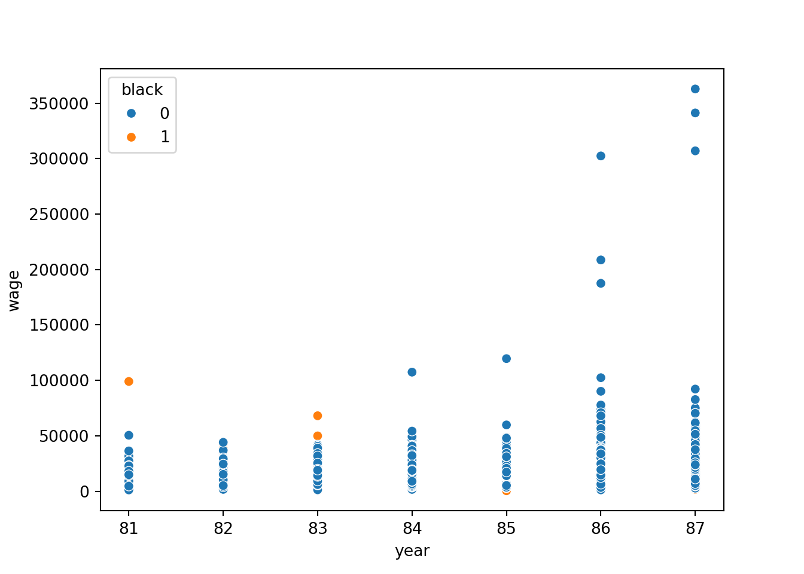
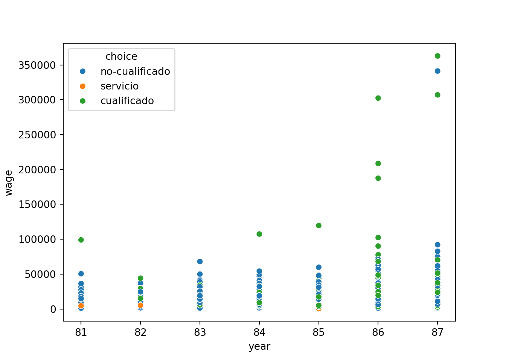
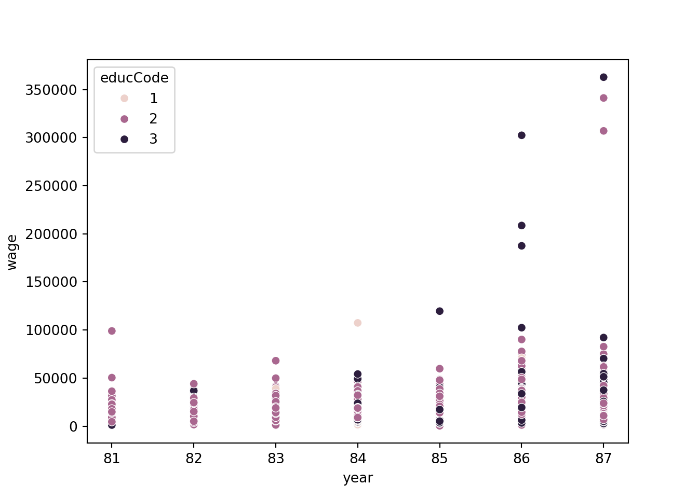

import numpy as np
import pandas as pd
import matplotlib.pyplot as plt
import seaborn as sb
from scipy import statsEn este post abordaremos un poco los datos keane obtenidos de Gretl
Empezaremos por importar las librerias necesarias
A continuación nos disponemos a visualizar los datos
Crearemos etiquetas para las observaciones de acuerdo a “choice” estudiante=1, hogar=2, cualificado=3, no-cualificado=4, servicio=5
Procedemos a gráficar la evolución de salarios separado por color de piel

En esta grafica evidenciamos que a lo largo de los años aumenta la discriminación.
Visualicemos lo siguiente: seleccionando sólo las personas que trabajan se realizara un gráfico de la evolución de los salarios separados por la variable choice

Se observa que la terciarización de la economía ha aumentado las diferencias entre trabajadores cualificados y no cualificados, así como, entre servicio e industria.
Ahora procedamos al análisis de la variable educ para ello primero la Codificaremos de acuerdo a educación básica=1, educación media=2, y educación superior=3.
Seleccionando solo las personas que trbajan tenemos lo siguiente:
